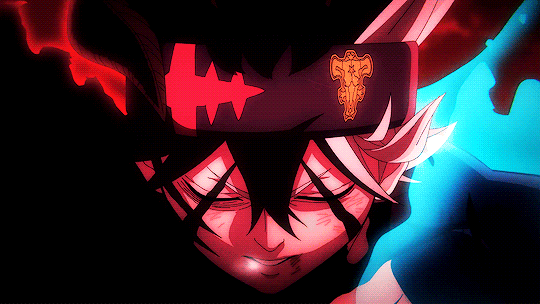

Upcoming: "Black Clover: Sword of the Wizard King"
As a lionhearted boy who can't wield magic strives for the title of Wizard King, four banished Wizard Kings of yore return to crush the clover kingdom
Episode 18: Dawn
The fight is not yet over: the kingdom is still rife with elves bent on revenge.

Episode 54: Awakening Power
While Asta and the others were training in the Heart Kingdom, back in the Clover Kingdom, Yami asked Mereoleona to help him train.
Episode 24: Fierce Battle
Round 1 of the tournament sees Asta and Mimosa teaming up for a heated battle against three skilled senior Magic Knights.
Episode 20: As Pitch Black as It Gets
Asta's Black Asta form does him no favors in the court of Damnatio Kira.